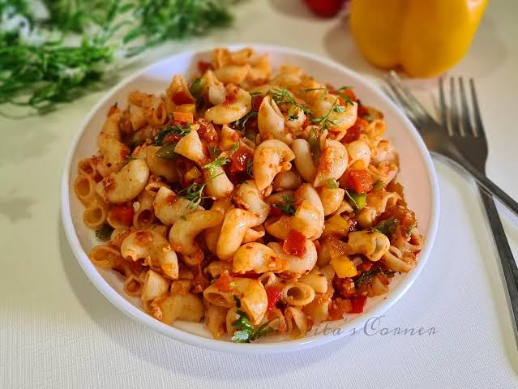

Back Home
Macaroni Recipe

Description
Macaroni is a simple, delicious, and comforting pasta dish that is perfect
for lunch or dinner. Made with tender macaroni pasta, a flavorful tomato
sause, and a blend of seasoning, it is an easy meal that anyone can
prepare at home.
This recipe combines basic ingredients to create a rich and satisfying
dish. Whether you're cooking for yourself or sharing with family, this
homemade macaronu is a tasty meal that doesn't require complicated cooking
techniques.
Ingredients
- 2 cups macaroni pasta
- 2 tablespoons vegetable oil
- 1 medium onion, finely chopped
- 2 cloves garlic, minced
- 2 medium tomatoes, chopped
- 2 tablespoons tomato paste
- 3 cups water
- ½ teaspoon black pepper
- ½ teaspoon paprika
- ½ teaspoon salt (adjust to taste)
- ½ teaspoon mixed spices
- Fresh parsley
Steps
-
Bring a pot of water to a boil. Add a little salt and the macaroni
pasta,
-
Cook the macaroni according to the package instrutions until tender but
still firm.
- Drain the pasta and set it aside.
- Heat the vegetable oil in a pan over medium heat.
- Add the chopped onion and cook until soft and slightly golden.
- Add the minced garlic and stil for about 30 seconds.
-
Add the chopped tomatoes and tomato paste. Cook until the tomatoes
soften and form a thick sauce.
- Season with salt, black pepper, paprika, and mixed spices.
-
Add the cooked macaroni to the sauce and mix until the pasta is evenly
coated.
- Cook for another 2-3 minutes, stirring gently.
- Garnish with fresh parsley if desired, then serve while hot.